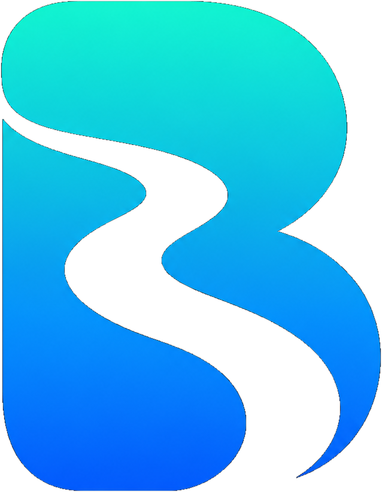

9 items1 selected48 GB free of 64 GB
brook:/ $ ls
BOOT DEV DRIVERS ETC SYS TEST TMP USR data nix proc
BROOK.CFG
brook:/ $ gpu glass status
palette=tinted hue=blue mode=mixed opacity=80 blur=light
accelerated=yes material_cache_rebuilds=1
brook:/ $
Theme
HueTints all of the chrome and the app surfaces.
Mode
GlassGlass theme only
80%
Backdrop blur
Display
Scale
Performance HUD
Frame-time graphsAPP, COMP and TEMP. Alt+P cycles.
Build labelKernel build and payload, beside the tray.
Tray
TemperaturePackage temperature next to volume.
24-hour clock
Date under the clock
Tasks
Window titlesOff shows icons only.
Dock and drawerConcept
Dock iconsAlong the top or the bottom of the sidebar.
Pin dock openKeeps the sidebar on screen. Windows get the space beside it.
Sidebar width
Edge
Dock height
Keep the dock over fullscreenOff: a fullscreen window covers the dock and the taskbar.
Chrome style
Effects
Reactive rim lightThe active rim picks up the wallpaper behind it.
Input
Touch targets44 px minimum. Turns on at the first touch.

BrookDell XPS 13 9343
- Build
- 3a4b909e
- Payload
- 29117654
- Display
- 3200×1800 at 200%
- Compositor
- GPU, glass on
Last boot
Desktop ready in 8.12 sFrom power-on.
Saved
Click target
Titlebar drag
Resize, 2 px inside the frame
Resize, 6 px outside the frame
Titlebar drag
Resize, 2 px inside the frame
Resize, 6 px outside the frame
b
↑ ↓ Enter openAlt+↑ ↓ reorder
brook3a4b909e
- Interface
- eth0
- Address
- 192.168.1.42
- Gateway
- 192.168.1.1
- Link
- 1 Gb/s, full duplex
- Output
- Speakers
52 °C6.1 W
- Sensor
- CPU package
- Last minute
- 48–56 °C
- Warm from
- 75 °C
- Hot from
- 90 °C
APP4.1 ms
COMP2.3 ms
TEMP52 °C